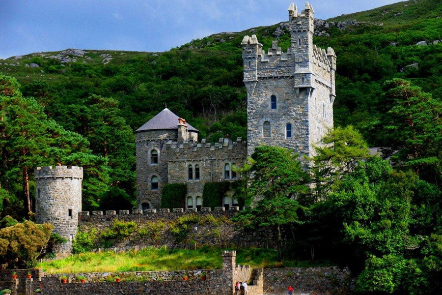

Glenveagh Castle
Glenveagh, meaning 'glen of the birches', is the second-largest national park in Ireland. Located in County Donegal, it includes Glenveagh Castle grounds, Lough Veagh, and much of the Derryveagh Mountains.Glenveagh National Park is a remote and hauntingly beautiful wilderness of rugged mountains, pristine lakes, tumbling waterfalls and enchanted native oak woodland in the heart of the Derryveagh Mountains in the north west of County Donegal.